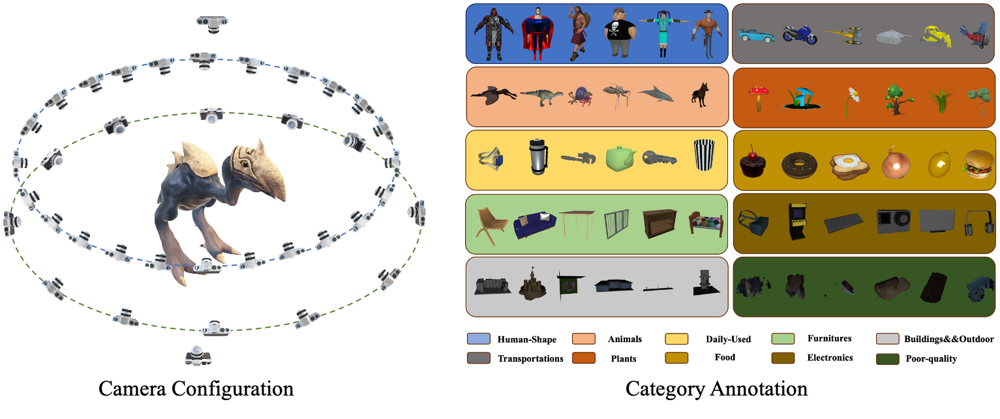

G-buffer Objaverse is rendered using the TIDE renderer on Objaverse with A10 for about 2000 GPU hours, yielding 30,000,000 images of Albedo, RGB, Depth, and Normal map. We proposed a rendering framework for high quality and high speed dataset rendering. The framework is a hybrid of rasterization and path tracing, the first ray-scene intersection is obtained by hardware rasterization and accurate indirect lighting by full hardware path tracing. Additionally, we using adaptive sampling, denoiser and path-guiding to further speed up the rendering time. In this rendering framework, we render 38 views of a centered object, including 24 views at elevation range from 5° to 30°, rotation = {r × 15° | r ∈ [0, 23]}, and 12 views at elevation from -5° to 5°, rotation = {r × 30° | r ∈ [0, 11]}, and 2 views for top and bottom respectively. In addition, we mannuly split the subset of the objaverse dataset into 10 general categories including Human-Shape (41559), Animals (28882), Daily-Used (220227), Furnitures (19285), Buildings&&Outdoor (116548), Transportations (20075), Plants (7195), Food (5314), Electronics (13252) and Poor-quality (107005).
@article{qiu2023richdreamer,
title={RichDreamer: A Generalizable Normal-Depth Diffusion Model for Detail Richness in Text-to-3D},
author={Lingteng Qiu and Guanying Chen and Xiaodong Gu and Qi zuo and Mutian Xu and Yushuang Wu and Weihao Yuan and Zilong Dong and Liefeng Bo and Xiaoguang Han},
year={2023},
journal = {arXiv preprint arXiv:2311.16918}
}
@article{objaverse,
title={Objaverse: A Universe of Annotated 3D Objects},
author={Matt Deitke and Dustin Schwenk and Jordi Salvador and Luca Weihs and
Oscar Michel and Eli VanderBilt and Ludwig Schmidt and
Kiana Ehsani and Aniruddha Kembhavi and Ali Farhadi},
journal={arXiv preprint arXiv:2212.08051},
year={2022}
}